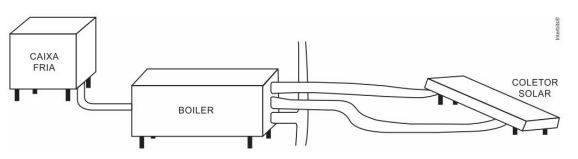

133. (Enem 2014)
Um sistema de pistão contendo um gás é mostrado na figura. Sobre a extremidade superior do êmbolo, que pode movimentar-se livremente sem atrito, encontra-se um objeto. Através de uma chapa de aquecimento é possível fornecer calor ao gás e, com auxílio de um manômetro, medir sua pressão. A partir de diferentes valores de calor fornecido, considerando o sistema como hermético, o objeto elevou-se em valores Δh como mostrado no gráfico. Foram estudadas, separadamente, quantidades equimolares de dois diferentes gases, denominados M e V. A diferença no comportamento dos gases no experimento decorre do fato de o gás M, em relação ao V, apresentar:

1) Qual grandeza física está em jogo?
2) O gás M apresenta, em relação ao V:
Assinale a alternativa correta: